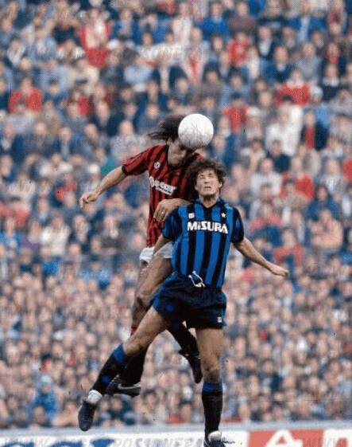

On Your Head! The Greatest Headers of a Football
Height is certainly a factor when helping a player to rise above defenders and prod home without using their feet.
However, as this article will prove, it is not a crucial factor when becoming one of the best headers of the ball in football history. This list will miss out on so many talented players, who could have easily been included, so here are a few honourable mentions: Andy Carroll, Duncan Edwards, Alan Shearer, Ian Wright, Andy Cole, Sergio Ramos and Olivier Giroud. Read our top 5 best headers of the ball in football history!
From his audacious backwards header against Stoke City in 2010 to the simple poke home at the back post that the Mexican was used to, Chicharito was loved for being a poacher, a fox in the box. Of the 53 goals scored in the Premier League, all were scored inside of the box. The only player to have scored more goals from inside the box in the competition is Tim Cahill.